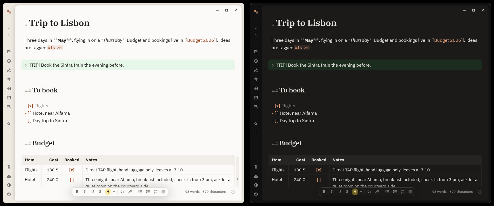

Notes that open before you blink.
A fast, minimal note-taking app. Your notes are plain Markdown files in a folder you choose, styled as you type.

Everything to write. Nothing in the way.
One window, one palette, one folder of files. The rest stays out of sight until you need it.
Styled as you type
Headings grow, bold and links render, the markers stay visible but dimmed. The file is always plain Markdown.
## HeadingPlain files, your folder
One .md per note, plus your .csv and .tsv. Sync with git, Syncthing, iCloud or Dropbox. A folder of notes you already have works as is.
vault/trip.mdKeyboard first
One palette finds notes by name or text, creates, switches and runs every command. No toolbar, no save button.
Ctrl + PLinks and graph
Links between notes, tags, backlinks to the open note, renames that rewrite your links, and a graph of it all.
[[Budget 2026]]Tables with formulas
Paste a table from a web page or a spreadsheet. A cell that starts with = computes, the file keeps the formula.
=sum(above)Diagrams
Mermaid, LaTeX, or shapes and arrows drawn on a canvas, UML included. Saved as SVG in your vault.
diagram.svgDaily note and capture
One key opens today's note. One shortcut of your desktop captures a line from anywhere, and the window is gone.
Ctrl + JSync in one action
Commit, receive, merge and send a vault kept in git. A real conflict keeps both versions as two notes.
Ctrl + Shift + SYours to dress
A dozen readable themes, light and dark, IBM Plex built in, English and French, following your system.
Dracula · Nord · GruvboxAnd also: slash commands, a formatting bar, blocks you drag, templates, find and replace, several cursors, comments, embedded sections, kanban boards, a folder or a tag shown as a table, two panes, CSV and TSV in a grid, a trash you can undo.
Install
On first run, one click creates your vault in Documents/Notes, or open any folder of Markdown notes. That is the only setup.
Windows 10 or 11, 64-bit. Installs for your user only, no administrator rights needed.
Download the installer or the .zip, to install nothing
The files are not signed. If SmartScreen shows “Windows protected your PC”, click More info, then Run anyway.
Apple Silicon and Intel, macOS 11 or later. Open the .dmg and drag Bref to Applications.
The app is not notarized, so the first launch needs Open Anyway in System Settings, Privacy & Security.
A prebuilt package ships with every release, no compiler needed. pacman then tracks it as bref.
curl -LO https://github.com/alarboulletmarin/bref/releases/latest/download/bref-x86_64.pkg.tar.zst
sudo pacman -U ./bref-x86_64.pkg.tar.zstBref is compiled on your machine. Install the libraries, Rust (the one from apt is usually too old), then build.
sudo apt install build-essential pkg-config libfontconfig-dev libfreetype-dev \
libwayland-dev libxcb1-dev libxkbcommon-dev libxkbcommon-x11-dev libvulkan1 \
fonts-noto-color-emoji
git clone https://github.com/alarboulletmarin/bref.git
cd bref
make
sudo make installSame steps as Debian, with these packages. Install Rust too.
sudo dnf install gcc pkgconf-pkg-config fontconfig-devel freetype-devel \
wayland-devel libxcb-devel libxkbcommon-devel libxkbcommon-x11-devel vulkan-loader \
google-noto-color-emoji-fonts
git clone https://github.com/alarboulletmarin/bref.git
cd bref
make
sudo make installYou need the development files of fontconfig, freetype, Wayland, libxcb and libxkbcommon, a Vulkan driver, an emoji font and Rust 1.88 or later.
git clone https://github.com/alarboulletmarin/bref.git
cd bref
make
sudo make installWith make install, Bref adds the bref command, an application menu entry and its icon; sudo make uninstall removes them. Full steps for each system.
Bref tells you when a new version is out. On Windows, macOS and Arch, one click updates it.